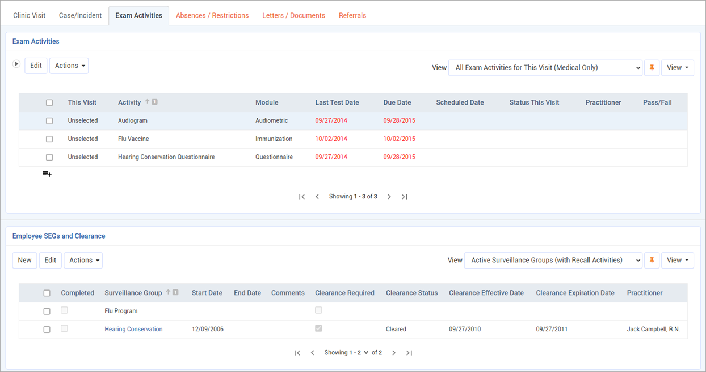

Information about each visit and revisit by an employee to the clinic is entered on the Clinic Visit form in multiple tabs (or sublists, if using a split screen layout).
→ Want a quick walkthrough? Watch the Clinic Visit course in Cority Academy
Clinic Visit Tab
Enter details about the employee and the visit. Most fields are self-explanatory, but you should know:
If you created the visit from an existing case management record, the Case Numberis populated; alternatively, enter the case number to link the records.
The time the employee spent waiting for treatment (Waiting Time) is calculated automatically as the difference between the Arrival Time andTreatment Time; the Time Takento complete the treatment is calculated as the difference between the Treatment Timeand Discharge Date/DischargeTime.
If this record was linked to from the Appointments/Scheduling module and the schedule status code is defined with the Arrivedcheckbox selected (in the ScheduleStatus look-up table), the Arrival Timeis populated from the Schedule Entry form; otherwise it defaults to the current time on your computer. Tip: Your administrator can set up a business rule that updates the status or other attributes of the clinic visit record when the schedule entry is updated, or vice versa.
If this is a revisit, the Employee Statementmay not be editable depending on your system settings.
Health CenterandPractitionerdefault to those selected in the system settings (for more information, see Changing Your System Settings) but if necessary you can enter a different health center and practitioner.
If the employee has any immunization records for immunization codes that include tetanus, the latest date is populated into the Last Tetanus Shot field.
The Vital Statistics section displays the information as recorded on the Vital Signs tab; if there are multiple readings recorded, this section displays the average of each entry. The BMIis calculated if height and weight are recorded.
Use the Smart Notefield to easily record detailed SOAP or Admission Notes. For more information, see Recording Smart Notes.
Click Save.
To schedule a follow-up, choose Actions»Schedule Follow-Up Appointment. The Schedule opens on the Weekly View tab displaying the Follow Up Date(or current date if no Follow Up Date was entered). Add the appointment as usual, changing the date if necessary (see Scheduling Appointments). The Activitywill be the same as the Clinic Visit Reasonif there is an activity with the same code; otherwise it will be left empty. The health center linked to the record will be added to the Health Center filter in the Appointments view, if it was not already selected. Click the back arrow to return to the clinic visit record. If you changed the appointment date, the Follow Up Date in the clinic visit record is updated.
Case/Incident Tab
The Case/Incident tab allows you to record information which should be transferred to the Case and/or Incident module.
In the Details and Incident Details sections, enter or edit the following information:
Depending on your system settings, the Chief Complaint may be populated from the clinic visit record.
If the incident is Case Managed, select the checkbox and select the Case Type. The layout may change depending on the Case Typeselected. Conversely, if you change to a layout that includes a default case type, the Case Typewill change.
Date(and Time, if known) of injury/initial diagnosis, and Jurisdiction(only includes jurisdiction records flagged as an “Incident Reporting Jurisdiction” in the Jurisdiction table).
Indicate if the incident is Occupational; a record will be created in the Incident module. If you are not ready to define the visit as Occupational, e.g. if the case is pending investigation, but you want to have the record available in the Incident module, select Share with Safety. See also Reporting an Incident.
Indicate if this case is an Injuryor Illness. If you choose Illness, select the Illness Type. Note that this will be checked automatically to match the setting of the primary nature of injury selected on the Nature of Injury tab.
Indicate if this case involves body fluid exposure; when you save the visit you are prompted to link the visit to an existing Body Fluid Exposure record or create a new one. See also Reporting a Body Fluid Exposure.
Indicate whether the incident is aPrivacy Caseand whether aNeedlestickinjury occurred (Privacy Case is automatically selected if Needlestick is selected). If Privacy Caseis selected, any automatically generated email messages will display “Privacy Case” instead of the employee name.
If the employee died, enter the date.
In the Description section, enter information about what happened in the fields on the left: i.e. what the employee was doing when injured; what happened, where the incident occurred, a description of the injury or illness, the object or substance that injured the employee.
If the safety manager agrees with the fields on the left, select the Safety Agrees With Above checkbox; the fields on the right are populated with the data from the left but can still be edited. If the checkbox is not selected, complete the fields on the right.
The fields on the left will populate the Employer’s First Report, and the fields on the right will populate the OSHA 301 report. If the Safety Agrees With Abovecheckbox is selected, the same information will appear on both reports.
If the employee received treatment away from the work site, in the Treatment Information section specify the location where treatment was given and indicate whether the employee was treated in an emergency room and/or was admitted to hospital.
Enter the appropriate Safety Classifications, including the Cause of Injury.
If the Cause of Injury code or Diagnosis code has been defined as Ergo Related, you are prompted to identify the incident as Ergonomic. If your user role matches the appropriate system setting (see Changing Your System Settings), you may choose Actions»Override Ergonomic Flagto set or clear this checkbox as necessary.
In the Claim Information section, record insurance claim details. These fields are transferred to the Incident and Case Management modules.
In the Short Term Disability (STD)section, if you select the Short Term Disabilitycheckbox, then any absence that you create in the Absences tab will also be flagged as STD and the Days Taken and Days Remaining will be calculated. Note that the STD period may be defined (in the system setting) as longer than one year.
In the OSHA (US Only) section:
If the appropriate system setting is enabled, the OSHA Recordablecheckbox is disabled from manual selection and will be selected automatically if the Nature of Injury, Medication, Procedure or Absences Status is identified as OSHA recordable in the corresponding look-up table; or if the employee died or lost consciousness. Depending on your user role (defined in the system settings), you can override this flag: choose Actions»Override OSHA Recordable Flag. If this action has been previously overridden, the Action text is displayed in red; another action allows you to view the history of such overrides. If the appropriate system setting is not selected, users can select or clear the OSHA Recordablecheckbox directly.
The Date became recordableis the visit date when the case became recordable.
If you want a red line to be displayed through this entry on the OSHA log, select Line Out on OSHA Log?and enter the Reason, your initials and the date.
In the FMLA (US Only) section, if you select the FMLA checkbox, then any absence that you create in the Absences tab will also be flagged as FMLA and the Days Taken and Days Remaining will be calculated.
The State FMLA (US Only) section displays the number of State FMLA Days Taken and Remaining, calculated based on employee absences to date (the absence must be must manually identified as State FMLA for the Days Taken and Days Remaining to be calculated).
Click Save. If you are creating a new occupational-related or non-occupational case-managed clinic visit, you are prompted to confirm whether you want to send an email notification about the new case to the case manager or occupational department. (Email notifications are not available for revisits.)
Vital Signs Tab
On the Vital Signs tab, click New to add a new set of vital signs. Optionally include anyComments, such as the method used to take the temperature, a description of the heart rate, etc.
The Age and Genderreflect the age and gender at the time the record was created. The Total Cholesteroland HDL Cholesterolfields display the employee’s most recent clinical test result of those types. The Framingham Risk Score and Percentagegraph are only calculated if other functionality is enabled and all fields in the Other Vitals section are completed; contact your system administrator for more information.
The average of all entered values is shown on the Clinic Visit tab.
To view the vital signs records for all of the patient’s clinic visits, choose the Vitals for All Visits view.
Vital signs appear in the Indicators tab of the Medical Chart module, and on the Blood Pressure Results ((with Graph) report. If you want to exclude this set of vitals, clear the Include in Vital Sign Reportcheckbox.
Units of measure (temperature, height, weight, neck) are set in the system settings; for more information, see Changing Your System Settings.
Exam Activities Tab
The Exam Activities tab displays two lists:

The upper list (Exam Activities) contains activities associated with the current clinic visit reason, followed by surveillance activities for the selected employee. If an activity is Due or Overdue, the dates are displayed in red. This list also displays any schedule entries (of “Schedule and Exam Activity” schedule type) that are not associated with the current clinic visit reason but are incomplete as of the date of the clinic visit.
For training recalls, the Last Test Dateis based on theAttended Datein the training record; if the Attended Date was not populated, the Course Date will be used in the calculation of the Last Test Date.
To identify the activities that will be performed at this visit, select the checkbox beside the activity you want to add, then choose Actions»Add Selected Activities to this Visit. The This Visitcolumn will display “Selected” which is linked to the related module for completion. To deselect an activity from the current visit, select the checkbox beside the activity, then choose Actions»Remove Selected Activities From This Visit. The This Visitcolumn will change to “Unselected”.
To add a new activity, click the “add” shortcut icon (see Adding New Records). After you select a Schedule Activity Code, the activity is added to the top of the list.
To open the related activity form, click the “Selected” link beside the activity. The activities are defined in the ScheduleActivity table. The use of the activity forms are described in their related modules. An activity linked to a module is marked as Complete after the new record is created in the linked module with the same test date as the clinic visit’s treatment date. If an activity is not linked to a module, when you click the “Selected” link the Clinic Visit Exam Activities edit form opens where you can mark it as Complete, Complete-Override Due Date, Deferred, or Declined. If you choose:
Deferred: enter the Gap and Period to calculate a new due date.
Declined: the next recall date is triggered from the date that it was declined.
Complete-Override Due Date: enter the new due date.
The “Complete - Override Due Date” status is used to record a SEG activity that has been completed but the recall for this patient has been changed to an earlier date than the calculated date for the next SEG recall. For example, the SEG may require a vision test every two years, but the doctor indicates that the patient must be rechecked in one year. The SEG activity will be considered compliant until the new due date.
To quickly update the Comments, Pass/Fail, and/or Practitionerfor one or more Selected activities, select the checkbox(es) and click Editto edit inline.
An Employee Active SEGs field may be added to a custom version of the Exam Activity layout; this allows you to specify any active SEGs with which the exam activity is associated, which will identify any ad-hoc activity completed that satisfies one or more of employee’s active SEGs. The activity will not be added to the recall definition.
To mark an activity (that is not linked to a module) as Complete, choose Actions»Mark all non-linked activities as complete. The Completeddate field defaults to the Treatment Date from the Clinic Vist record, but you can change it if necessary.
When an activity is marked Complete, either manually or after a new record is created in a linked module, any procedures linked to this activity are listed on the Procedures tab. Related procedures are defined in the ScheduleActivity table.
The lower list (Employee SEGs and Clearance)contains any surveillance groups (SEGs) the employee is a member of, whether all of the SEG’s activities have been completed, and the clearance information fields (if the SEG is defined as Clearance Required in the ExposureGroup table).
To complete activities linked to the SEG on this clinic visit, select the checkbox beside the required SEG(s), then choose Actions»Add activities linked to SEG to Exam Activities list. The related activities are added to the top section, with a “Selected” link in the This Visit column. Once all activities for an SEG that have been deemed mandatory (in the ExposureGroup look-up table) have been completed, the Completed checkbox will automatically be selected. If an activity is defined as a group activity (see ScheduleActivity), all of its sub activities will be displayed (read-only) when you open the group activity exam activity layout (they are not listed on the Exam Activity tab). When any one of the sub activities is completed, the group activity is marked as Completed.
To edit the employee’s SEG membership, and/or to edit or add a clearance status if applicable, click the SEG name (the SEG is hyperlinked if clearance is required).
To quickly mark the clearance status of one or more SEGs, select the checkbox beside each and choose Actions»Mark Clearance Status of All Selected SEGs. You are prompted to select the status and date. To quickly update other fields for one or more SEG, select the checkbox(es) and click Editto edit inline.
The Clearance Expiration Date is calculated from the effective date and the activity in the exposure group with the smallest recall gap. For example, if all activities were recalled in one year, the expiration would be one year from the effective date; if four activities were a one-year gap and the fifth activity was a six-month gap, the expiration date would be six months from the effective date. This date can be edited inline; if changed, the equivalent date will be updated in all other locations (e.g. the corresponding Exposure Clearance record).
If added to your view, a checkbox indicates if a Medical Surveillance SEG letter was generated for the employee and/or supervisor.
Nature of Injury Tab
This tab displays the nature of injury and part/side of the body affected for all injuries relating to this visit. For more information, see Recording Injuries.
Dx Tab
This tab displays all medical diagnoses recorded for this employee in the Demographics, Medical Chart, Clinic Visits, Case Management, or Immunization modules. For information about entering a diagnosis, see Recording Medical Conditions.
Allergies Tab
This tab displays all allergies recorded for this employee in the Demographics, Body Fluid Exposure, Medical Chart, Clinic Visits, Clinical Testing, or Immunization modules. For information about entering an allergy, see Recording Allergies.
Rx Tab
The Rx tab displays all medications and contraindications recorded for this employee in the Demographics, Body Fluid Exposure, Medical Chart, Clinic Visits, Clinical Testing, or Immunization modules. For information about entering a medication or contraindication, see Recording Medications (non-eRx).
You can view medications related to this visit or choose to view all medications used by this employee. You should check if there is a contraindication to an immunization or medication before you give it to the employee; these are also listed on this tab.
To create a note from a medication, open the medication subform, select a medication, and choose Actions»Create Note. The Note Dateand Note Timewill be populated with the treatment date and current time, unless specified to be different in the note layout (e.g. current time). The note can be edited and signed the same as other notes (see Adding Notes to a Form).
Procedures Tab
The Procedures tab lists all activities that have been marked Complete on the Exam Activities tab, if this has been set up in the ScheduleActivity look-up table. For information about editing or adding procedures, see Recording Procedures.
Notes Tab
The Notes tab allows you to review the medical notes written for this visit (or related visits or all visits), print selected notes, and to enter new notes. For information about creating Smart Notes, see Recording Smart Notes; for information about regular notes, see Adding Notes to a Form.
Click the date to view the details below the list.
When viewing All Clinic Visit Notes, any Smart Notes are shown in a truncated form. Click to view the note in a popup window.
Letters Tab
The Letters tab allows you to view past letters (for this case or all medical letters created for the employee in the Clinic Visit, Medical Letters, or Case modules, depending on the view selected) or generate new letters to employees. Form letters are stored in the LettersTemplate look-up table. For information about creating letters, see Generating a Letter. Letters created using the Clinic Visit merge table can only be created in the Clinic Visit record, but can be viewed in other medical modules. If you generate a Medical Surveillance SEG letter, the Employee Letter Generated (or Supervisor Letter Generated) checkbox(es) on the lower list of the Exam Activities tab is selected automatically (if these checkboxes were added to your view).
Instead of opening individual records to print the Medical Surveillance SEG Letter for the employee and/or supervisor, you can use the Medical Surveillance SEG Letters report to generate letters for multiple employees at the same time; if you save the letters when prompted, the appropriate checkbox for each record is automatically selected so that the letter will only be sent once.
Absences Tab
This tab displays all absences recorded for this employee in the Clinic Visits, Incident, or Case Management modules. For information about entering an absence, see Recording an Absence.
Restrictions Tab
This tab displays all work restrictions recorded for this employee in the Demographic, Medical Chart, Clinic Visits, Case Management, Pulmonary, and Respirator Fit modules. For information about entering a work restriction, see Recording Work Restrictions.
To quickly end all listed restrictions, choose Actions»End All Active Restrictions.
Referrals Tab
The Referrals tab allows you to track referrals related to this clinic visit. You can view all referrals related to this employee or just referrals related to this visit. For more information, see Managing Referrals.
Documents Tab
The Documents tab allows you to link a file containing information about an employee’s health to the employee. Linking a file to an employee offers medical professionals working with the employee easy access to the file. For more information, see Linking or Importing a Document.
Smoking History Tab
If the employee currently smokes or has smoked in the past, record this on the Smoking History tab. Any data entered here is shown on the same tab in Pulmonary Fit Test records.
Click Newand select the Typeof tobacco smoked, the frequency of smoking and the years when smoking started and stopped. You can enter as many types of tobacco as required (e.g. cigars, cigarettes, pipes, etc.). Click Save.
 (see Adding New Records). After you select a Schedule Activity Code, the activity is added to the top of the list.
(see Adding New Records). After you select a Schedule Activity Code, the activity is added to the top of the list.